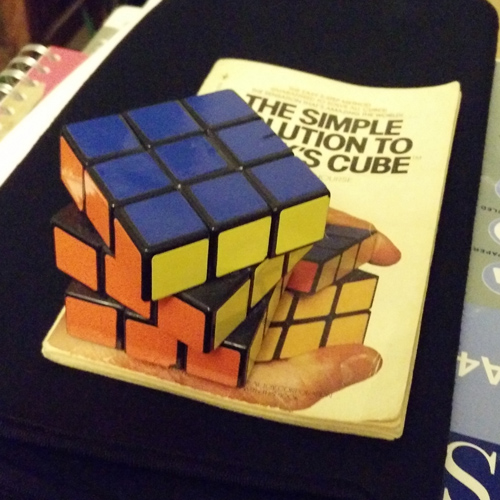

Original ~1980s 3×3×3 Cube

- This cube was presumably manufactured some time during the 1980s, judging by quality, condition and sticker colours.
- The cube is shown atop a 1981 booklet guide to solving the cube.
- At the time this cube was manufactured, the speed-cubing community was in its infancy, and specially designed cubes were not common. This cube has very poor, high-friction turning as well as little corner-cutting, and is therefore more of collectors item than a usable cube.
Pellentesque pharetra vitae sapien ut posuere. Donec ut semper nunc, vel malesuada ligula. Etiam luctus hendrerit pharetra. Sed interdum metus at ligula eleifend, in malesuada lectus finibus. Cum sociis natoque penatibus et magnis dis parturient montes, nascetur ridiculus mus. Sed et porttitor ligula, in eleifend est. Sed laoreet non justo at cursus. Sed nec eros aliquet velit iaculis faucibus eget eget quam.